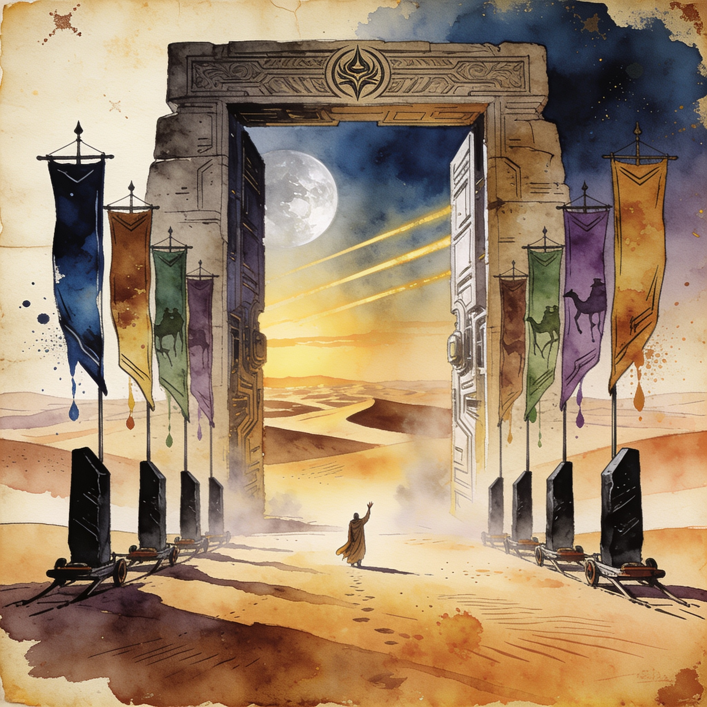

Local hardware
Nvidia locks October for its first RTX Spark Windows PCs, with eight OEMs on a public launch roster
The roster names Lenovo, Acer, ASUS, Dell, HP, Microsoft Surface, MSI and GIGABYTE for an October rollout of GB10-based machines. Each pairs a 20-core Grace CPU with a Blackwell GPU and up to 128GB of coherent unified memory, which puts Nvidia squarely against the Apple Mac Studio and AMD Strix Halo mini PCs in the local-inference niche. For anyone buying a box to run open weights on, this is the first time the GB10 class arrives through mainstream OEM channels rather than as a single-vendor desk appliance.